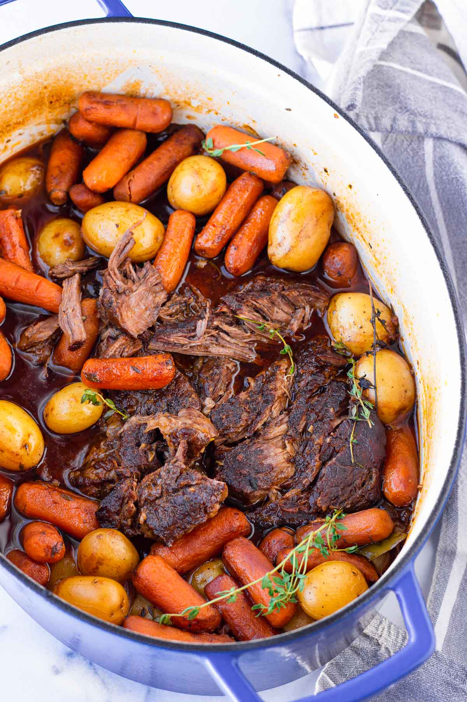

Pot Roast Recipe

Description
This Dutch Oven Pot Roast is everything you need to keep you warm and cozy this winter! It's so tender it falls
apart beautifully, and it's packed with lots of rich flavors.
Ingredients
- Beef chuck roastA 3-pound chuck roast should be good. Remove any big chunks of fat around
the edge
- Salt and pepper:To season the meat prior to searing.
- Olive oil:For cooking and searing
- Yellow onions:For cooking and searing
- Garlic:Minced garlic, about 6 cloves.
- Tomato paste:Tomato paste is packed with deep flavors. It's definitely a must-have
ingredient in this pot roast.
- Red wine:To help deglaze the onions and build flavor.
- Beef broth:For the liquid component.
- Worcestershire sauce:Did anyone say more flavor?!
- Fresh thyme and rosemary:Fresh herbs add complexity and flavor.
- Bay leaves:Adds aromatic tones.
- Baby carrots:Very convenient, no need to peel or chop.
- Baby yellow potatoes:Very convenient, no need to peel or chop.
- Italian parsley:For garnish and totally optional.
Steps
- Preheat oven to 300 degrees F.
- Generously season the meat with about 1 ½ teaspoons Kosher salt and 1 teaspoon ground black pepper on all
sides.
- Heat about 2 tablespoons of olive oil in a large 7-8 quart Dutch oven pot over medium-high heat. Sear on
each side until golden brown, about 5-6 minutes per side. Remove from the pot and set aside. Do not wipe the
Dutch oven clean. Tip: Let the meat sear undisturbed on both sides, and only flip once a nice golden brown
crust has developed. There's no need to sear the edges, but you can.
- Reduce to medium heat. Add the onions and saute until they start to brown, about 3 minutes, scraping the
bottom and sides of the pot to deglaze with the moisture from the onions. If the brown bits are burning too
fast, add a few splashes of broth and deglaze. Stir minced garlic cook for another 1 minute until fragrant.
Tip: use a wooden spoon to avoid scratching the cast iron surface.
- Add the red wine (or substitute with beef broth), and quickly deglaze the brown bits from the bottom and
sides of the pot for a few seconds. Then, add 2 cups of the beef broth, Worcestershire sauce, tomato paste,
fresh thyme sprigs, fresh rosemary rosemary sprigs, and bay leaves. Stir until evenly combined and bring to
a low boil.
- Return the seared meat back to the pot, along with its juices. The liquid should cover about half of the
meat - if not, add more beef broth as needed. Cover securely with the lid and bake for 1.5 hours at 300
degrees F.
- Remove from oven and add the baby carrots and potatoes. At this point, you can also adjust seasoning with
salt and pepper. Return to oven (with the lid on), and cook for 2 hours more or until the meat is fork
tender and falls apart, and until the vegetables are tender. If you want it to be even more tender, cook for
another 15-30 minutes.
- f desired, garnish with parsley. To serve, you can transfer to a large platter to serve it straight from the
Dutch oven. Enjoy!
Home